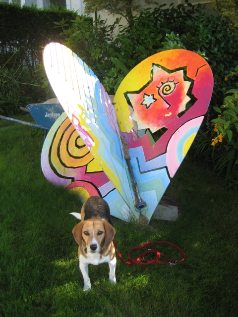

<--Previous Up Next-->

Beat Heart Beat
Double jackpot! This Hearts in San Francisco piece, hidden away near St. Francis Wood at 199 San Felipe at San Jacinto, isn't just a heart sculpture, but a pitched percussion instrument. Notice the slots on the upper left and the mallet lying in the center. The artist is David Povilaitis.